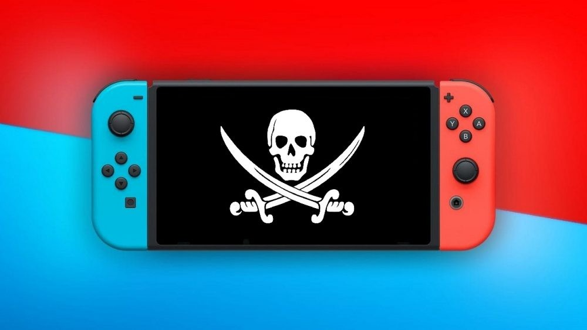
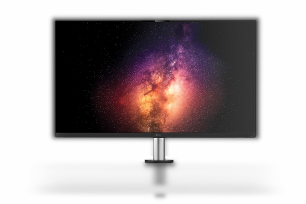
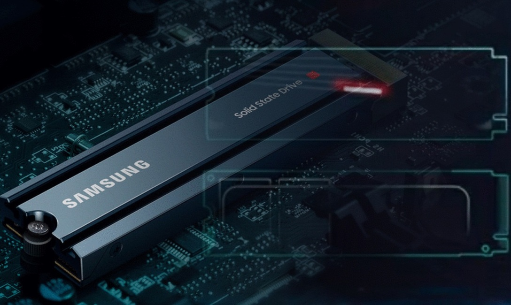

Las noticias más importantes del momento

Nintendo VS Emuladores de Switch
Nintendo toma como medida utilizar el sistema de "DRM Denuvo" en la Nintendo Switch.
Noticia Completa

El monitor de LG que tiene inteligencia
artificial
Este curioso monitor LG UltrFine 32UQ890 incluye una cámara inteligente que seguirá
nuestro movimiento ocular, para mejorar la ergonomía.
Noticia Completa

El nuevo SSD lanzado por Samsung
Samsung ha anunciado su nuevo SSD NVMe 990 Pro, una unidad de almacenamiento de alto
rendimiento
Noticia Completa
Nintendo VS Emuladores de Switch
Nintendo toma como medida utilizar el sistema de "DRM Denuvo" en la Nintendo Switch.
Noticia CompletaEl monitor de LG que tiene inteligencia artificial
Este curioso monitor LG UltrFine 32UQ890 incluye una cámara inteligente que seguirá nuestro movimiento ocular, para mejorar la ergonomía.
Noticia CompletaEl nuevo SSD lanzado por Samsung
Samsung ha anunciado su nuevo SSD NVMe 990 Pro, una unidad de almacenamiento de alto rendimiento
Noticia CompletaLa consola de Nintendo es la más única de las consolas que se pueden encontrar ahora en el mercado, más que nada por el hecho de que en el fondo es una portátil y eso conlleva que su hardware por motivos de consumo y tamaño sea inferior al de sus rivales. Lo que supone que sea mucho más fácil de emular que sus rivales. Algo que obviamente no es del agrado de la compañía nipona. ¿Su medida? Implementar el sistema DRM Denuvo en Switch.
El sistema contra la piratería llamado Denuvo es de las cosas más odiadas por los jugadores en PC, ya que ven como buena parte de la potencia de sus ordenadores se va por la cloaca gracias a este sistema de protección de derechos digitales. Tanto es así que por mucho que prometa una versión de un juego para ordenador en lo que a capacidades técnicas se refiere. Solo es necesaria la presencia de dicha aplicación en un título para que este sea marcado como indeseable. ¿Qué sentido tiene aplicarlo en una consola?
¿Denuvo en los juegos de la Nintendo Switch?
Dada la limitada potencia de la consola de la consola híbrida, muchos de sus usuarios ya deben estar llorando como unas plañideras por la noticia. No os preocupéis, que la cosa no va por esos derroteros y el rendimiento de los juegos en el sistema original no se verán afectados. Por lo que el objetivo de implementar Denuvo en Switch es dificultar la emulación de los juegos en el PC y otras plataformas. Tened en cuenta que Nintendo vende sus consolas con benefició y no solo los juegos. Además, la mayoría de usuarios de estos emuladores no sacan sus juegos de la propia tienda digital de Nintendo y mucho menos de conectar las tarjetas de juego. En este último caso por el hecho de que no existe una interfaz para ello.
Por lo que es normal que la empresa de Kioto con tal de proteger sus ganancias y su negocio haya decidido tomar la decisión de implementar Denuvo en Nintendo Switch. La potencia de la consola se mantiene fija, pero la de los ordenadores es cada vez mayor y, por tanto, es cada vez más fácil ejecutar el emulador de la consola, por lo que se llegará al punto en que cualquiera con un sistema medianamente bueno podrá ejecutar los juegos sin comprar la consola.
La consola original siempre es lo mejor
Si te estás planteando comprarte un PC en vez de la Nintendo Switch, entonces deja que te digamos que es mala idea, no solo por el hecho que la portabilidad de la consola híbrida es uno de sus puntos fuertes, sino por otros motivos. Entre los cuales podemos incluir el hecho de que acabaríamos pagando mucho más en hardware para tener unos resultados mínimamente decentes. Todo ello sin olvidarnos que la emulación no es del todo perfecta en los juegos y nos podemos encontrar no solo con errores gráficos, sino también con cuelgues de todo tipo.
Podemos encontrar en el mercado una gran cantidad de monitores diferentes, según el uso que le vayamos a dar al mismo. LG Electronics acaba de presentar un interesante monitor gaming el cual incluye inteligencia artificial. Este curioso monitor LG UltrFine 32UQ890 incluye una cámara inteligente que seguirá nuestro movimiento ocular, para mejorar la ergonomía.
Hasta la fecha hemos visto, principalmente, en los monitores gaming que se tiene en cuenta resolución y tasa de refresco, entre otros parámetros. Pero, no se suele tener en cuenta la posición del usuario o el movimiento ocular en partida para adaptarse mejor al usuario. Esta solución de LG parece muy interesante y abre un nuevo campo.
Este es el LG UltrFine 32UQ890
Tiene la particularidad este monitor de estar pensado para adaptarse en todo momento a las necesidades del usuario. Han incluido una cámara y una inteligencia artificial para ajustarse mejor a los requisitos del jugador. Y es que no todos tenemos la misma posición en pantalla, por lo que a veces no conseguimos la mejor experiencia.
LG indica que este monitor se adapta de manera inteligente a la posición del jugador. Se consigue mejorar la ergonomía y comodidad del usuario en todo momento. Una de las grandes particularidades es que el brazo es completamente ergonómico.
Integra este monitor una cámara en la parte superior del panel, la cual integra una IA propia de LG que analiza de manera constante la postura del usuario. Esto permite que pueda realizar ajustes sutiles en la pantalla para adaptarse al usuario. Permite regular la altura entre 0-160 mm o la inclinación entre -20º y +20º. Esto evita que estemos en una misma posición durante mucho tiempo o mantener en el tiempo una postura incorrecta.
Dispone este monitor LG UltrFine 32UQ890 tres modos inteligentes diferentes de ajuste de la ergonomía. AI Motion es el mejor, ya que detecta la altura de los ojos para conseguir el mejor ajuste de altura e inclinación posible. Además, tenemos los modos Continous Motion y Periodic Motion.
¿Qué características tiene el producto?
Las principales características de este panel pensado para jugar. Lo primero que debemos saber es que tenemos una pantalla de 31.5 pulgadas que es de tipo IPS. Este monitor tiene una resolución 4K y una cobertura de color DCI-P3 del 95%.
No solamente esto, este monitor de LG nos ofrece una tasa de refresco de 60 Hz y un tiempo de respuesta de 5ms GtG. Además, se destaca que tiene certificación HDR10, para ofrecer la mejor calidad de imagen posible.
Respecto a la conectividad, este monitor cuenta con un HDMI y un DisplayPort 1.4. Adicionalmente tiene dos USB 3.0 de bajada y un USB 3.0 de subida. También incluye dos altavoces de 5W, para ofrecer al usuario la mejor experiencia posible. Hasta cuenta con un mando a distancia para poder controlar y gestionar este monitor.
Destacar que este monitor LG UltrFine 32UQ890 será presentado durante el IFA 2022, que se celebra en Berlín. No sabemos aún la fecha de lanzamiento y el precio de este producto, pero no debería de ser especialmente económico.
En el marco de la Gamescom 2022 de Colonia, Samsung ha anunciado su nuevo SSD NVMe 990 Pro, una unidad de almacenamiento de alto rendimiento que está pensado, especialmente, para acelerar y mejorar el rendimiento de los videojuegos, tanto para los amantes del PC como aquellos que cuentan con una consola. Dado que la única compatible con este formato es PS5, es una interesante noticia, en especial, para los poseedores de esta plataforma.
Basada en PCIe 4.0, este nuevo producto de la marca coreana incorpora la última V-NAND y un controlador propio, velocidades de lectura y escritura secuencial de hasta 7.450 megabytes por segundo (MB/s) y 6.900 MB/s, respectivamente, mientras que las velocidades de lectura y escritura aleatorias llegan a hasta 1.400K y 1.550K IOPS, respectivamente. Esto supone una mejora de cerca del 55%, en el rendimiento aleatorio, frente al anterior modelo de Samsung el 980 Pro.
Carga instantánea de los mapas de Forspoken
En la nota de prensa, Samsung asegura que «la 990 PRO ofrece tiempos de carga más rápidos a los PCs y las consolas para una experiencia de juego más envolvente». Bonitas palabras, pero ¿y los hechos? La misma marca indica un benchmark muy interesante ya que lo esta nueva unidad se ha probado con el próximo título de Square Enix, Forspoken, exclusivo para PS5 con lanzamiento también en PC. Suponemos que los datos son de la versión en PC – ya que, aunque se menciona «consola», no se especifica la versión del juego probada – pero el resultado de este 999 Pro, el tiempo de carga del mapa fue de aproximadamente un segundo, en comparación con cuatro segundos para un SSD SATA y 28 segundos para una unidad de disco duro (HDD).
Más rápido y más eficiente
Destaca también el fabricante la eficiencia energética del 50% de este nuevo 990 Pro frente a su versión anterior gracias a elementos como la arquitectura de bajo consumo, el recubrimiento de níquel en el controlador o una etiqueta de difusión del calor en la unidad, lo que le otorga también una gestión térmica más fiable apoyado por la tecnología Dynamic Therman Guard propia de la marca. Contará con versión con disipador térmico que mejora este aspecto y luces RGB para un toque de estilo.
Completan sus características una DRAM LPDDR4 de 1, 2 o 4GB, según el modelo de unidad, cifrado de disco completo AES de 256 bits y TCG/Opal V2.0